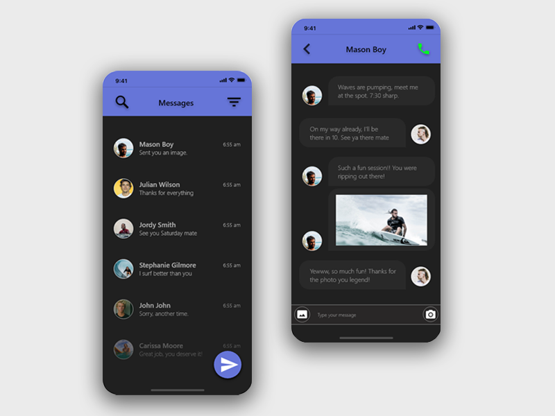
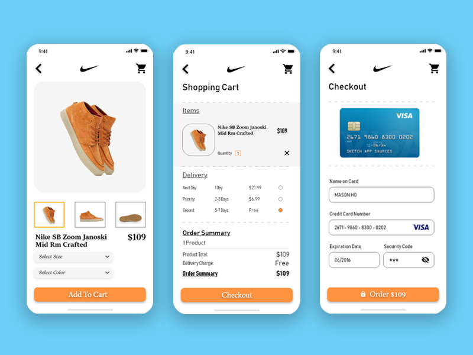
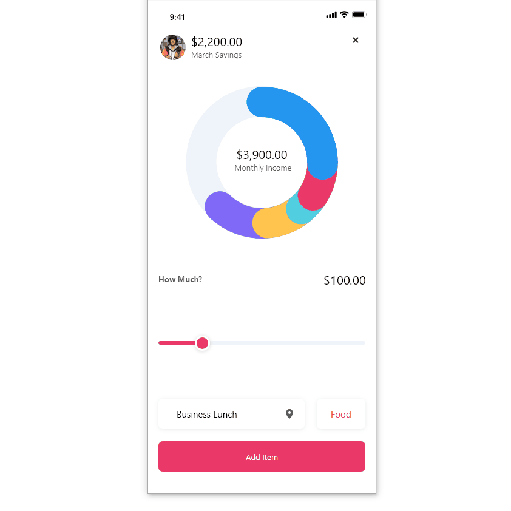
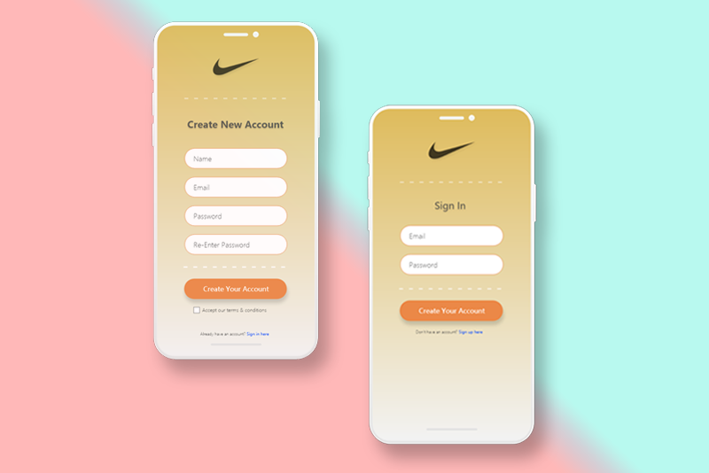

The first impression for mobile design is the biggest opportunity to influence user opinion. The content structure also plays a key role in influencing the user’s opinion about a mobile application. For this example, the goal was to create a sleek, modern user experience composed of a dark background contrasted by a dark slate blue. This UI was inspired by a popular messaging app I use named Textra.

Below is a multi page online shopping concept which features three total steps the user will experience during their purchase. The first page represents the product page featuring a variety of differnt product images in a slider format. The second page features the user's shopping cart including devlivery total, subtotal and overall cost. The third page is the final step in the user journey where the user finally checks out. Using call-to-action buttons allows the user to navigate the journey rather easily.

This particular UI design is an experiment with a mobile app which allow the user to enter in daily expenses to help with monthly financial budgeting. The app is simple. Enter in your monthly income, set a goal you wish to save each month, then enter your total expenses. The mobile application will calculate the achieved savings. What I really enjoy about this concept is the vibrant animated circular graph giving the user a visual of their saving milestones.

The following design is an experimental UI for a log-in or sign-in screen. This UI allows the user to create a new account or sign into an existing account.
